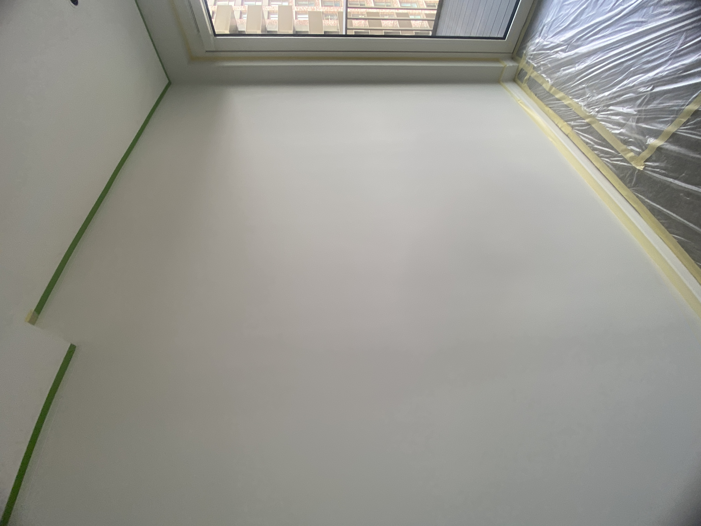
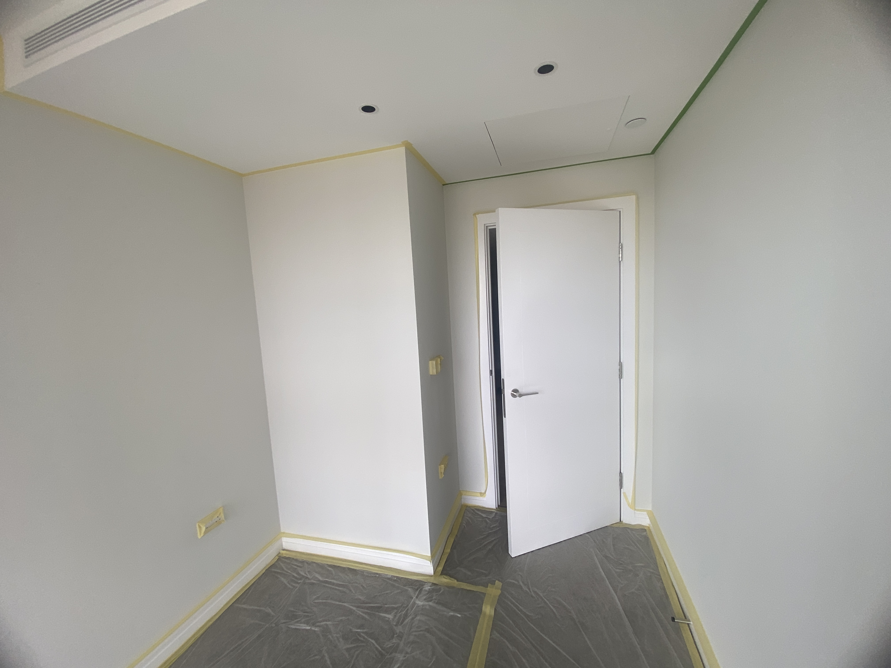
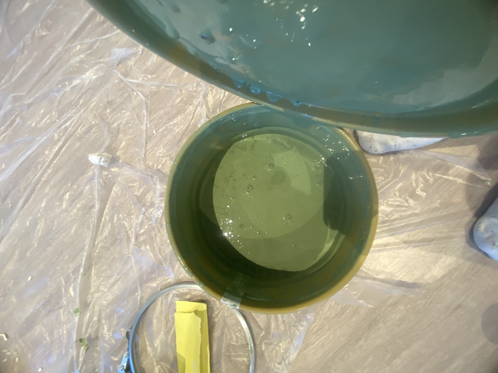

House of Hackney Paint Review: A Decorator’s Experience with Jadette 27
Is House of Hackney paint worth it? In this real decorating project, I used House of Hackney’s Jadette 27 on a bedroom in London. Here I explain the preparation, application, colour, coverage and final finish from a decorator’s perspective.

When choosing paint for a decorating project, the brand is only one part of the equation. Surface preparation, the condition of the walls, the tools being used and the application technique can all have a significant effect on the final result.
As a painter and decorator working in London, I regularly work with different types of paint, from professional trade products to premium and luxury decorating brands. Recently, I had the opportunity to work with House of Hackney paint on a bedroom project.
The client selected Jadette 27, a distinctive green shade from House of Hackney. The colour created a strong transformation compared with the original light walls and gave the bedroom a much deeper and more characterful appearance.
Rather than simply giving a general opinion about the brand, I wanted to document the actual decorating process. This article shows the project from preparation through to the finished walls and explains what I noticed while working with the paint.
What Is House of Hackney Paint?
House of Hackney is a British luxury interiors brand known for its distinctive approach to interior design, particularly bold patterns, wallpapers, fabrics and rich colour palettes. Its decorating products are designed for interiors where colour and visual character are important.
Unlike a purely functional approach to decorating, luxury paint is often selected because of the atmosphere it can create within a room. Colour can completely change the appearance of walls, particularly when combined with the right lighting and interior furnishings.
The client choose Jadette 27 colour. Rather than simply being a neutral wall colour, it became one of the main visual features of the bedroom.
The Bedroom Before Painting
Before beginning the work, the room had light-coloured walls and a relatively neutral appearance. The objective was to completely transform the space using the client's chosen green colour.
Before applying any paint, however, the condition of the existing surface needs to be assessed. A high-quality paint cannot compensate for poor preparation. Small imperfections that are difficult to notice on a light wall can become much more visible once a darker colour is applied.
This is particularly important with strong colours. Darker or more saturated colours can highlight uneven surfaces, repairs, roller marks and differences in porosity if the preparation is not carried out properly.

The original wall surface can be seen above. This was the starting point for the project before the new colour was applied.

A second view shows the condition and layout of the room before the decorating work began.
Preparing the Walls Before Painting
One of the most important parts of any painting project is preparation. It is tempting to focus on the paint itself, especially when using a premium brand, but the preparation underneath the paint has a major influence on the final appearance.
For this project, we started with a light sanding of the walls. The purpose was to help create a smoother and more consistent surface before painting.
Sanding also helps remove minor surface imperfections and provides a better surface for the subsequent coats of paint.
After preparing the walls, attention was given to protecting the areas that were not going to receive the green paint. The skirting boards, ceiling lines, door surrounds and other areas were carefully protected with masking tape.

For this particular project, I chose to use masking tape around the edges to help achieve a clean separation between the green walls, white ceiling and other surfaces.
Masking tape is not a replacement for good cutting-in technique, but it can be useful when working on detailed areas or when the objective is to achieve very sharp lines.
Protecting the Room Before Application
Protecting the surrounding areas is another important part of professional decorating. Before applying the paint, the floor was covered with protective sheeting and masking tape was used around the skirting boards and other areas.
This preparation takes time, but it makes the painting process cleaner and reduces the risk of paint splashes and accidental marks.

The photograph above shows the room after the preparation and masking stage. At this point, the surfaces were ready for the first application of paint.
House of Hackney Jadette 27: The Colour We Chose
The client selected Jadette 27 for the bedroom. The colour is a rich green shade that changes noticeably depending on the lighting conditions in the room.
This is something worth remembering when choosing any strong paint colour. A colour viewed on a small sample can look very different when applied across several walls.
Natural daylight, artificial lighting, the direction of the windows and surrounding colours can all influence how a paint colour appears.

The image above shows the colour information for the paint used on this project: Jadette 27.
For anyone considering this colour, I would recommend testing a sample in the actual room before committing to the complete project. Looking at the colour under both daylight and artificial lighting is especially useful.
Applying the First Coat
After the preparation was completed, we moved on to the first coat.
For this project, we used a mist coat with approximately 10% water. The purpose of the first coat was to help establish a suitable base on the prepared surface before applying the finishing coats.
It is important to understand that the correct preparation and first-coat system can vary depending on the condition and type of the substrate. Not every previously painted wall requires the same treatment.
When working with a new or highly absorbent surface, a suitable primer or mist-coat system may be required. On previously painted surfaces in good condition, the preparation process can be different.
The important point is to assess the surface before deciding what system to use rather than automatically applying the same process to every wall.

What Equipment Did We Use?
The tools used during a painting project can have a significant influence on the finish. For this project, we used Purdy Pro Extra rollers.
Rollers are particularly important when working with large wall areas because the wrong roller can leave excessive texture, uneven coverage or unwanted roller marks.
A good roller combined with the correct application technique helps distribute the paint evenly across the wall.
However, equipment alone does not guarantee a professional finish. The speed of application, pressure applied to the roller, loading of the roller and maintaining a wet edge are all important.
I also recommend avoiding excessive overworking of paint once it begins to dry. This can create visible differences in texture and sheen.
Applying House of Hackney Jadette 27
Once the preparation and first coat were completed, the finishing coats of Jadette 27 were applied.
Working with a strong green colour requires consistency. The paint needs to be distributed evenly across the wall while maintaining a consistent application pattern.
Large walls were rolled systematically, while the edges and more detailed areas were carefully dealt with using appropriate brushes.
One advantage of working methodically is that it reduces the possibility of visible overlaps between sections. Keeping a wet edge is particularly important when painting larger walls.
Lighting also needs to be considered during application. A wall can look very different depending on whether it is viewed under natural daylight, ceiling lights or side lighting from a window.
For that reason, I always recommend checking the walls from different angles before deciding that a coat is complete.
Checking the Paint Finish
After applying the paint, the masking tape was removed carefully to reveal the edges.
The image above shows the finished wall after the masking tape was removed. The contrast between the green walls and the white ceiling and woodwork creates a clean and defined appearance.
This is also where preparation becomes particularly noticeable. Clean edges and a consistent wall surface help the colour look much more polished.
The Final House of Hackney Paint Finish
Once the work was completed, the green colour created a completely different atmosphere in the bedroom.
One of the most noticeable characteristics of this particular colour is how much it changes according to the lighting. Under daylight, the green appears different from the way it looks under warmer artificial lighting.
This is one of the reasons I think colour selection should always be considered in the context of the room rather than judged solely from a colour card.
The white ceiling, door and skirting boards also created a strong contrast with the green walls. This helped define the architectural details of the room.
For a bedroom, a deeper colour such as Jadette 27 can create a more enclosed and atmospheric feeling compared with a very light neutral.
My House of Hackney Paint Review
Based on this particular project, I found House of Hackney paint an interesting option for clients looking for a more distinctive luxury interior.
The biggest attraction for me was the colour selection and the visual character of the finished room. Jadette 27 transformed what was originally a fairly neutral bedroom into a much stronger interior.
However, I would not say that buying an expensive paint automatically guarantees a better result.
The final appearance depends on several factors:
- Condition of the existing walls
- Surface preparation
- Sanding and filling
- Correct primer or first-coat system
- Choice of roller and brushes
- Application technique
- Number of coats
- Drying conditions
- Lighting in the room
- Quality of the cutting-in and finishing work
In other words, premium paint works best when it is combined with good decorating practice.
Are Luxury Paint Brands Worth the Extra Money?
This is one of the most common questions clients ask when choosing paint.
Luxury paint brands can offer attractive colours, premium finishes and a design-led approach that appeals to homeowners who want something different from standard neutral decorating.
However, the price of the paint should always be considered alongside the size of the project and the expected result.
If you are painting several rooms, the difference in price between a premium brand and a professional trade paint can become significant.
For a feature room, bedroom or high-end interior where colour is a major part of the design, spending more on a particular paint may make sense.
For large rental properties, hallways or areas where durability and cost efficiency are more important, a professional trade paint may be a more practical choice.
Decorator's tip: Don't choose a paint brand simply because it is expensive. Choose the product based on the surface, room, colour, finish, durability requirements and overall budget.
Is House of Hackney Paint Worth It?
Based on this project, I would consider House of Hackney a strong option for clients who are looking for distinctive colours and a luxury interior aesthetic.
The Jadette 27 colour gave this bedroom a dramatic transformation and worked particularly well against the white ceiling, door and skirting boards.
However, I would recommend comparing the paint with other premium brands before making a final decision. Farrow & Ball, Little Greene, Paint & Paper Library and premium ranges from larger manufacturers can all offer different characteristics.
The best choice depends on what you are trying to achieve rather than simply selecting the most expensive product.
My verdict
- Colour selection: Excellent for distinctive interiors
- Luxury appeal: Strong
- Suitable for bedrooms: Yes
- Best for: Design-led and premium interiors
- Important consideration: Preparation remains essential
House of Hackney Compared with Other Luxury Paint Brands
House of Hackney is not the only option for homeowners looking for luxury paint. The UK has several established premium brands, each with its own colour collections, finishes and characteristics.
| Brand | Best Known For | Typical Customer |
|---|---|---|
| House of Hackney | Distinctive colours and luxury interiors | Design-led homeowners |
| Farrow & Ball | Colour depth and premium interiors | Premium residential projects |
| Little Greene | Curated colours and premium finishes | Traditional and contemporary interiors |
| Paint & Paper Library | Luxury colour collections | High-end interiors |
| Dulux Trade | Professional performance and value | Decorators and larger projects |
There is no universal winner. A professional decorator should select the paint system based on the surface and the requirements of the project.
Why Preparation Matters More Than the Paint Brand
After working with different paint products, one lesson remains consistent: preparation has a huge influence on the final result.
A wall with cracks, dents, old repairs or an inconsistent surface can still look poor after applying an expensive luxury paint.
Before painting, the decorator needs to identify imperfections, repair them where necessary, sand the surface and make sure the substrate is suitable for the chosen paint system.
This is particularly important when applying strong colours because imperfections can become more noticeable once the wall is painted.
Good tools also make a difference. A quality roller can help produce a more consistent texture, while a good brush can make cutting-in easier.
Ultimately, the paint is only one part of the decorating system.
Final Thoughts on House of Hackney Jadette 27
This House of Hackney project was a good example of how much a room can change through colour.
The original bedroom had a much lighter appearance. After preparation and application of Jadette 27, the room became considerably richer and more characterful.
For me, the most important takeaway is that a luxury paint should be treated as part of a complete decorating system. Preparation, tools, application technique and attention to detail all contribute to the finished result.
If you are considering House of Hackney paint for your own project, I would recommend ordering a sample, testing the colour in the actual room and viewing it at different times of day before committing to the entire space.
Jadette 27 is certainly a colour that makes an impression, and in this bedroom it created a strong transformation.
Frequently Asked Questions About House of Hackney Paint
Is House of Hackney paint good quality?
Based on my experience with this bedroom project, House of Hackney paint produced an attractive finish when combined with proper preparation and professional application. The overall result also depends heavily on the condition of the surface and decorating technique.
What colour is House of Hackney Jadette 27?
Jadette 27 is a distinctive green colour used on this bedroom project. As with most strong colours, its appearance can change depending on natural and artificial lighting.
Is House of Hackney paint suitable for bedrooms?
Yes. House of Hackney's design-led colours can be particularly effective in bedrooms where a stronger colour can create a more atmospheric interior.
Does expensive paint guarantee a better finish?
No. Surface preparation, application technique and the quality of the tools can have a major effect on the final result. Premium paint cannot compensate for poor preparation.
Should I test House of Hackney paint before painting the whole room?
Yes. Testing a sample in the actual room is recommended, particularly with darker or stronger colours. Observe the colour under different lighting conditions before making your final decision.
Is House of Hackney better than Dulux Trade?
They serve different purposes. House of Hackney is aimed more towards luxury, design-led interiors, while Dulux Trade is widely used by professional decorators where performance, availability and value are important.
Need a Painter and Decorator in London?
EveroDecor provides professional painting and decorating services across London, with a focus on careful preparation, quality materials and clean finishing.
View Our Services